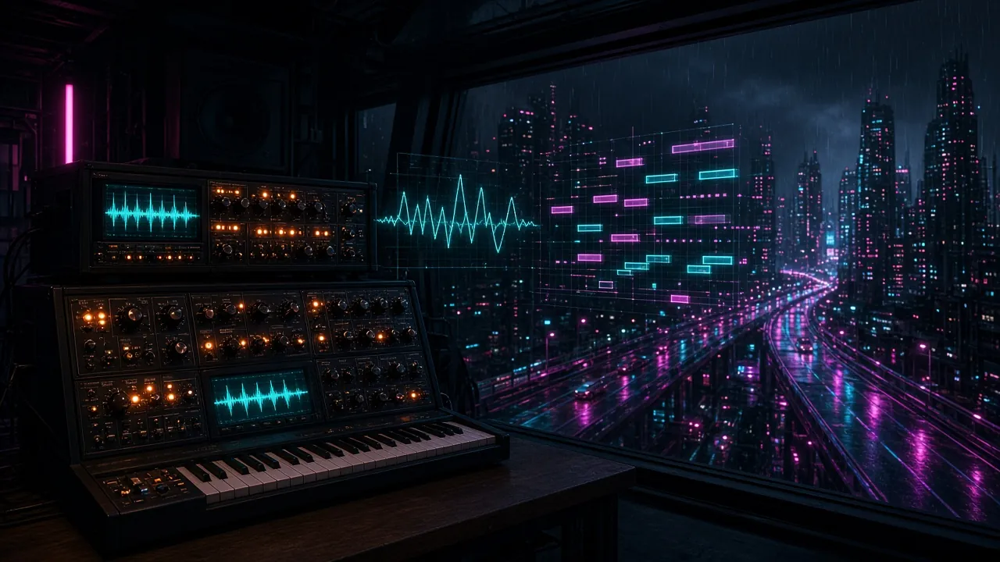
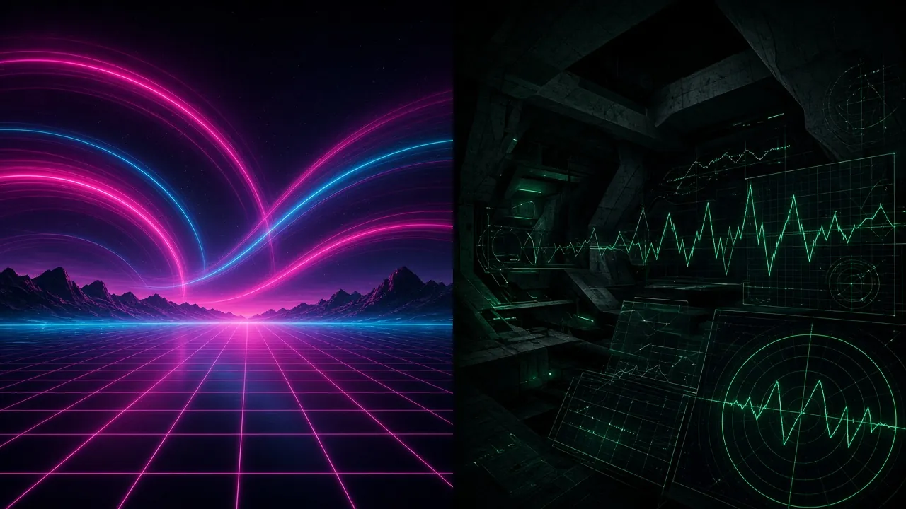

The long read · October 22, 2026
50 Free Synthwave and Darkwave MIDI Leads, Built Like Software
How one helper function, a standard-library Python builder, and two independent MIDI parsers produced 50 lead loops whose notes, chords, and numerals you can check before they reach your DAW.

Most free MIDI packs ask you to trust them. You download a folder, drag a clip into the arrangement, and find out on playback whether the notes fit the chords the file name promised, whether the loop ends where it should, and whether that "legato" line is two notes overlapping or a stuck note.
Nocturnal Synthesis takes the other approach. It is a pack of 50 monophonic lead loops for synthwave, darkwave, coldwave, and dark cinematic work, and every claim about the files is written down next to them and checked by code that did not write them.
The short version
- 50 Standard MIDI Files: Format 0, 480 PPQ, 4/4, one integer tempo each from 85 to 130 BPM, channel 1 only.
- 1,024 notes across 218 bars, in 2-, 4-, and 8-bar loops.
- One reference chord per bar, each with a Roman numeral that the validator re-derives from the chord itself.
- 19 of 19 checks passed, including a second, independent MIDI parser.
- Royalty-free in your own music. The ZIP is about 38 KB, and you can audition every file in the browser lab before you download it.
Why a lead has to work with the delay off
A synthwave lead usually reaches the listener through a stack of effects: detuned oscillators, chorus, a dotted-eighth delay, a long plate reverb. Those effects are the genre's signature, and they are also a trap. A weak line can sound finished when it is buried in its own echoes. Turn the delay off and it falls apart, because nothing in the rhythm or the contour was holding it up.
So every pattern in the pack was written to stand up dry, as plain notes on a single mono voice. That came down to three rules, and each one is measured rather than asserted.
A rhythm you could tap on a table. The hook in 001 Chrome Horizon is recognizable from its rhythm alone: an eighth-note A4, a jump to A5 that is held across the beat, then a quick fall through G5 and E5. The pack scores syncopation per note: an onset on the beat counts 0, an offbeat eighth counts 0.5, and anything on a sixteenth counts 1. Neon Hooks average 0.54. Haunted Melodies average 0.30, because a slow elegy should land closer to the beat.
Chord tones where the ear checks. Beats 1 and 3 are where a listener hears whether a melody agrees with the harmony. The pack tracks two numbers: the share of each pattern's sounding time spent on tones of its reference chords, and the share of beat-1 and beat-3 notes that are chord tones. The first ranges from 60% (038 Fading Polaroid, a deliberately tense two-bar loop built on a major-seventh appoggiatura) to 100% (030 Cryogenic Sleep). Every pattern clears 50%. That is a proxy for "fits the chords", not proof that the line is good.
Silence is part of the line. Cold Signals leave 53% of each loop silent on average. That space is what makes a clipped coldwave phrase read as a signal instead of noise, and it is where your delay will live later.
What is in the pack
The 50 patterns are split into five groups of ten. Each group has a job, and the numbers show the difference.
| Group | IDs | Tempo | Notes per bar | Legato patterns | Job |
|---|---|---|---|---|---|
| Neon Hooks | 001–010 | 98–124 BPM | 5.2 | 7 of 10 | Immediate motifs with a clear rhythmic identity |
| Midnight Sequences | 011–020 | 112–128 BPM | 6.7 | 4 of 10 | Pulsing, arpeggio-inspired figures that stay in the lead role |
| Cold Signals | 021–030 | 86–116 BPM | 4.0 | 2 of 10 | Minimal, angular phrases with clipped articulation and space |
| Haunted Melodies | 031–040 | 85–100 BPM | 3.4 | 9 of 10 | Sustained minor-key themes and bittersweet resolutions |
| Cinematic Flight | 041–050 | 114–130 BPM | 5.0 | 7 of 10 | Wider intervals, rising tension, longer development |

The pack covers ten tonal centers. Thirty-one patterns are in natural minor, seven in Dorian, seven in harmonic minor, and five in Phrygian. There are five two-bar loops, 38 four-bar loops, and seven eight-bar loops.
Pitches run from G3 to F#6, and 96.6% of all notes sit between C4 and C6 (MIDI 60 to 84). That is the register where a lead clears the bass and pad without fighting a vocal. Fourteen patterns climb above C6 for a peak, most of them in Cinematic Flight.
Velocities run from 94 to 127. Notes at 115 or above are accents, and the browser lab draws them brighter, so you can see the phrasing before you hear it.
The ZIP also contains a pattern index CSV (key, scale, chords, numerals, motif, suggested sound), a note-event CSV with one row per note, a README with every convention, a SHA-256 manifest, and the license.
Five groups, five jobs
Neon Hooks: the chorus you hum on the drive home
001 Chrome Horizon runs i–bVI–bIII–bVII, which in A minor is Am, F, C, G. The major chord on the lowered seventh is the sound of an outrun chorus: it lifts instead of pulling home. 003 Turbo Interceptor moves to E Dorian and puts the raised sixth, C#5, over the IV chord in bar 3. That one note is why Dorian sounds brighter than natural minor, and the pattern makes you hear it.
Midnight Sequences: motion that stays a melody
This is the busiest group, at 6.7 notes per bar on average, and 011 Grid Runner Pulse reaches 8.25. The risk with a sequenced lead is that it turns into an arpeggiator and stops being a tune. These patterns keep an anchor. 013 Sodium Vapor Arpeggio separates its sixteenth-note bursts with sustained target notes and spends 91.5% of its sounding time on chord tones. 016 Cyberdeck Uplink shifts to D Phrygian: i–bII–bvii–i, or Dm, Eb, Cm, Dm.
Cold Signals: clipped, angular, spacious
Cold Signals have the widest average interval in the pack, 4.4 semitones between consecutive notes. 021 Bunker Transmission, in E Phrygian at 96 BPM, uses staccato eighths and wide leaps like a transmission cutting in and out. 027 Subzero Conduit traces F harmonic minor over Fm, Db, Gdim, C (i–bVI–ii°–V). Only two of the ten use legato. Cold means detached.
Haunted Melodies: slow, sustained, minor
At 85 to 100 BPM and 3.4 notes per bar, this is the slowest and most legato group: nine of the ten patterns use overlaps. 037 Winter on the Spree keeps its v chord minor (F#m in B minor), so the cadence never brightens. 039 Nocturne for Androids is eight bars in C# minor and puts a bII chord, D major, right before the final V. That Neapolitan color is the most cinematic move in the group.
Cinematic Flight: wider, higher, longer
This is the fastest group, averaging 122 BPM, and it carries ten of the fourteen peaks above C6. 043 Hyperdrive Ascent spans two full octaves, F#4 to F#6, across eight bars at the pack's top tempo of 130 BPM. 049 Event Horizon Glide has the highest floor in the pack: it never drops below F5 and peaks at E6. 050 Omega Dawn Finale closes the collection in A harmonic minor with i–bVI–iv–V–i–bVI–ii°–V.
One chord per bar, and numerals you can check
Every bar has one reference chord. The chords are not in the MIDI files. They live in the index CSV and the README, so you can play them under the lead, revoice them, or ignore them.
The Roman numerals follow one documented convention. Each numeral is measured from the parallel major scale: uppercase is a major chord, lowercase is minor, ° is diminished, and a flat sign lowers the root a semitone below that major-scale degree. In A minor, that gives:
| Numeral | Chord in A minor | Role |
|---|---|---|
| i | Am | Tonic |
| bVI | F | Lowered sixth, major |
| bIII | C | Relative major |
| bVII | G | Lowered seventh, major |
| iv | Dm | Minor subdominant |
| V | E | Major dominant, borrowed from harmonic minor |
| IV | D | Major subdominant, the Dorian color |
| bII | Bb | Phrygian or Neapolitan second |
| bvii | Gm | Lowered seventh, minor (Phrygian) |
| ii° | Bdim | Diminished supertonic |
Across all 218 bars, the counts are i 64, bVI 50, V 37, iv 22, bIII 13, bVII 10, IV 8, bII 6, bvii 3, ii° 3, and v 2. The bVI chord appears in 44 of the 50 patterns, and a major V appears in 32. The most common opening is i–bVI–iv–V, which starts 10 of the 45 loops that run four bars or longer.
One correction deserves a plain statement. An earlier build of this pack labeled the minor chord on the lowered seventh as vii in three Phrygian patterns (016, 021, and 026). Under the convention above, that chord is bvii, because its root sits a semitone below the major scale's seventh degree. The validator no longer checks numerals against a lookup table. It re-derives every numeral from the chord's root and quality, so a mislabeled chord now fails the build.
Notes outside the declared scale are listed, not hidden. There are 56 of them across 35 patterns: the raised leading tone over a major V, a Dorian sixth borrowed into natural minor, a chromatic passing tone. The index CSV lists every out-of-scale pitch for each pattern by name and MIDI number.
Legato that a mono synth can actually use
In 29 patterns labeled legato, some adjacent notes overlap on purpose, 144 times in total. Each overlap lasts 25 to 45 ticks, which is shorter than a 32nd note at 480 PPQ. An overlap always joins two different pitches, and never more than two notes sound at once.
On a mono synth with legato or fingered portamento switched on, that overlap is the cue to glide into the next note instead of retriggering the envelope. On a polyphonic patch you will hear, at most, a very short two-note blur. The other 21 patterns have no overlaps at all: every note ends at or before the next one begins.
If you want the intended effect, set the synth to mono legato (often called fingered) mode and add 15 to 45 milliseconds of portamento. Glide behavior depends on the synth, which is why it is a suggestion in the README and not something the MIDI can enforce.
From a line of Python to a MIDI file
Nothing in the pack was drawn in a piano roll. Each note is one call to a small helper, n(beat, dur_beats, note, velocity, shift_ticks=0, extra_ticks=0). This is bar 1 of 001 Chrome Horizon, exactly as it appears in the source:
# Bar 1 (Am): Iconic octave leap A4 -> A5 with 35-tick legato into G5
n(0.0, 0.5, "A4", 104),
n(0.5, 1.0, "A5", 118, extra_ticks=35),
n(1.5, 0.5, "G5", 106),
n(2.0, 0.75, "E5", 110),
n(2.75, 0.5, "D5", 98),
n(3.25, 0.5, "E5", 104),
Beats become ticks at 480 per quarter note, so beat 0.5 is tick 240. On the second line, extra_ticks=35 stretches A5 from 480 ticks to 515. It is still sounding when G5 begins at tick 720, which is a deliberate 35-tick legato overlap.
The builder uses only the Python standard library. It writes each file in the same order:
- A Format 0 header with one track and a division of 480.
- At tick 0, the track name, the tempo, and the 4/4 time signature. For 001 at 112 BPM, the tempo event stores 535,714 microseconds per quarter note.
- Every note as an explicit Note On (
0x90) and Note Off (0x80) on channel 1, with delta times as variable-length quantities. When one note ends on the same tick another begins, the Note Off is written first. - One end-of-track event exactly on the loop boundary: tick 7,680 for a four-bar loop.
There are no program changes, controllers, pitch bends, or SysEx messages. The sound is your patch's job, so the file behaves the same on every synth.
How the files were checked
A validator that shares code with the writer can share its bugs. The builder has its own MIDI parser, so passing its self-check proves little. The pack is checked by two parsers that share no code with the builder or with each other: mido 1.3.3 in Python and @tonejs/midi 2.0.28 in Node.
The 19 checks fall into five families.
- Structure. Exactly 50 files with IDs that match both CSVs. Every file parses as Format 0 with one track at 480 PPQ. Track name, tempo, and time signature sit at tick 0. Only note messages on channel 1.
- Timing. Every Note On has an explicit Note Off, Note Offs come first on shared ticks, and a single end-of-track lands on the loop boundary with no note crossing it.
- Content. Pitch and velocity ranges, the legato rules, an exact match between the parsed notes and the note-event CSV, numerals re-derived from chords, every out-of-scale note listed, and the chord-tone proxy.
- Distinctness. No exact, transposed, re-velocitied, or re-tempoed duplicates across all 1,225 pairs. A near-duplicate scan compares onset, pitch-class, and interval token sets, and fails anything at 0.85 similarity or above. The closest pairs are 031 and 035 at 0.18 on onset and pitch class, and 011 and 015 at 0.76 on onset grid alone. No pattern is a shorter loop repeated unchanged.
- Packaging. A clean rebuild in a temporary folder is byte-identical, all 56 output files included. Every SHA-256 in the manifest matches. The ZIP passes its CRC test, and each of its 55 members matches the validated file byte for byte.
The second parser then reads all 1,024 notes again, along with tempo, meter, channel, and loop end, and compares them with the CSVs. It found zero problems.
To make sure the checks can fail, one velocity byte and one numeral were deliberately corrupted in a scratch copy. The CSV, numeral, determinism, ZIP, and second-parser checks all failed, as they should.
The full report ships inside the pack and renders on the validation panel, including the exact commands to reproduce it.
What the checks cannot tell you
Automated checks prove that the files say what the documentation says. They cannot prove that the music is good. The report lists its own limits.
- Musical quality, memorability, and how a line sits in a mix are judgments. The chord-tone share is a proxy, not a listening test.
- Glide on legato overlaps depends on the receiving synth's mono legato mode and portamento. It cannot be verified from MIDI.
- The files were not imported into commercial DAWs in this environment. They were parsed with mido and @tonejs/midi.
- The browser preview synth is a sketch of each suggested sound, not the suggested patch itself.
- Near-duplicate detection compares token sets. It cannot judge perceived similarity.
How to use the pack in your DAW
- Set the tempo first. Each pattern's BPM is in the index CSV and in the file's tempo event. Some DAWs ignore an imported tempo unless you ask them to keep it.
- Set the loop length yourself. The end-of-track event sits on the 2-, 4-, or 8-bar boundary, but some DAWs trim a clip to its last note. The loop length is in the CSV and the README.
- Use a mono patch for legato patterns. Turn on legato glide to hear the overlaps as slides.
- Play the reference chords under the lead. They are in the index CSV, one per bar. A plain pad is enough to hear whether the line still works.
- Transpose freely. Almost every note sits between C4 and C6, so a shift of a few semitones keeps the line in a normal lead register.
The pack suggests one of four sounds for each pattern, and the lab can preview all four.
| Preview patch | Suggested for | Character |
|---|---|---|
| Neon Saw | 16 patterns | One sawtooth into a resonant low-pass with a quick filter envelope |
| Hollow Pulse | 16 patterns | Narrow pulse wave, high-passed, with a short gate for cold staccato |
| Wide Unison | 10 patterns | Two saws detuned by about 12 cents, delayed vibrato, long release |
| Glass Triangle | 8 patterns | A triangle with a quiet sine an octave up: soft, close, vocal |
FAQ
Can I use these MIDI files in commercial releases?
Yes. The patterns are royalty-free in your own music, including commercial releases, film, games, and streams, and no credit is required. You may not resell or redistribute the files themselves, upload them to sample or MIDI sites, or train machine-learning models on them without written permission. The full terms are in LICENSE-PATTERNS.md.
What tempo and key are the files in?
Each file has one integer tempo between 85 and 130 BPM, stored in its tempo event and listed in the index CSV. The pack covers ten tonal centers in natural minor, Dorian, harmonic minor, and Phrygian.
Do the files include chords, bass, or drums?
No. Each file is a single monophonic lead line on channel 1. The reference chords, one per bar, are in the index CSV and the README. The browser lab can play reference chords and drums so you can hear each lead in context.
Why are there no CC, pitch-bend, or program-change messages?
So the files behave the same on every synth. Sound, glide, and modulation belong to your patch. The suggested sound for each pattern is written in the index CSV, and it is never encoded in the MIDI.
Will the files work in Ableton Live, FL Studio, Logic, or Bitwig?
They are standard Format 0 MIDI files that two independent parsers read identically, which is what DAWs expect. They were not tested inside those DAWs in this environment. If one misreads a file, please open an issue on GitHub.
What does bVI mean in the chord column?
It is the major chord built on the lowered sixth degree. In A minor that is F major. The numerals are measured from the parallel major scale, so a flat sign means the root sits a semitone below that major-scale degree.
Get the pack
The pattern lab plays the real files, with the chords underneath and the notes drawn as they are parsed. Filter by group, length, or scale, and share a single pattern with a deep link such as #L016. When a line works, download the ZIP and drag the same file into your session.
The builder, both validators, and this site are open source on GitHub.